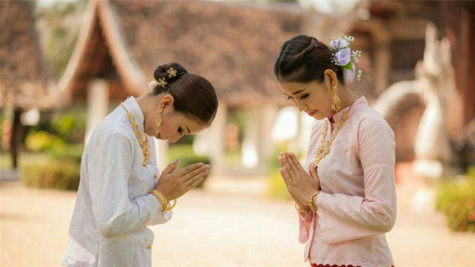

O cumprimento nacional é conhecido como WAI, ao invés de apertar as ãos, os tailandeses costumam cumprimentar as pessoas unindo as palmas das ãos em frente ao peito e inclinando levemente a cabeça.

A Capital da tailândia (Bangkok) tem o nome mais extenso do mundo!
Seu nome é: Krung Thep Mahanakhon Amon Rattanakosin Mahinthara Ayuthaya Mahadilok Phop Noppharat Ratchathani Burirom Udomratchaniwet Mahasathan Amon Piman Awatan Sathit Sakkathattiya Witsanukam Prasit
A tradução mais aproximada seria: "Cidade dos anjos, grande cidade dos imortais, magnífica cidade das nove joias, sede do rei, cidade dos palácios reais, lar dos deuses encarnados, construída por Vishvakarman sob ordem de Indra."
Ainda mbem que ela é conhecida só por Bangkok!!